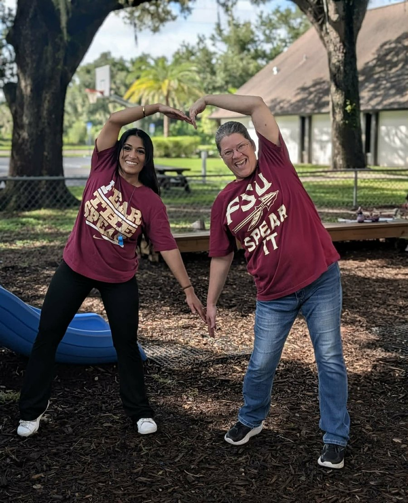

Testimonies
What our families say
Kind words from the parents who trust us with their little ones.

“
I just wanted to let you know that our daughter has made straight A’s again! Her kindergarten teacher even asked where she had attended preschool because she is so bright and excited about learning. Our only complaint with A Little Schoolhouse is that you were not around for our first three children!
I want to say thank you from the bottom of my heart. As an educator my expectations of schools is very high. I expect schools to make learning fun, make strong connections with their students, and have fun doing it. You guys exceeded all my expectations. Truly an amazing school with 5 ⭐️ staff. Thank you so much for taking care of him and being amazing every day! Eternally grateful.
After two years at another preschool I always dreaded the whining and complaining about going to school. Now she runs to the car smiling and only complains when it’s not a school day!
We searched so many preschools and just weren’t comfortable with any of them. The minute I met with Ms Natalie and saw the classroom I knew that this was the right place for us!
You are all so creative and so patient with the kids. It is such a blessing to know our son is in such good hands.